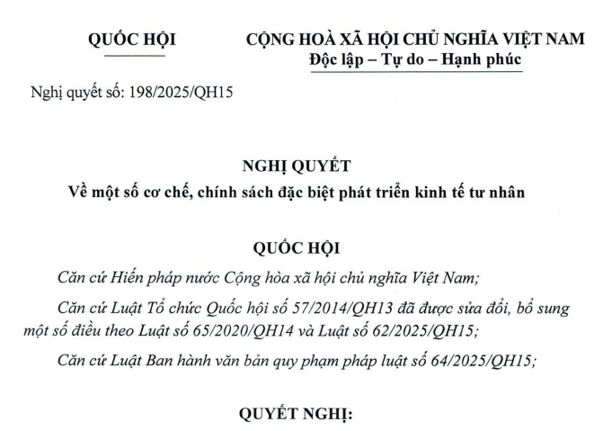

Ngày 17/5/2025, Quốc hội thông qua Nghị quyết 198/2025/QH15 về một số cơ chế, chính sách đặc biệt phát triển kinh tế tư nhân, trong đó đề cập nhiều chính sách miễn thuế.
Một số chính sách nổi bật phải kể đến như:
1. Miễn thuế thu nhập doanh nghiệp trong thời hạn 02 năm và giảm 50% số thuế phải nộp trong 04 năm tiếp theo đối với thu nhập từ hoạt động khởi nghiệp đổi mới sáng tạo của doanh nghiệp khởi nghiệp sáng tạo, công ty quản lý quỹ đầu tư khởi nghiệp sáng tạo, tổ chức trung gian hỗ trợ khởi nghiệp đổi mới sáng tạo. Việc xác định thời gian miễn, giảm thuế thực hiện theo quy định của pháp luật về thuế thu nhập doanh nghiệp.
2. Miễn thuế thu nhập cá nhân, thuế thu nhập doanh nghiệp đối với khoản thu nhập từ chuyển nhượng cổ phần, phần vốn góp, quyền góp vốn, quyền mua cổ phần, quyền mua phần vốn góp vào doanh nghiệp khởi nghiệp sáng tạo.
3. Miễn thuế thu nhập cá nhân trong thời hạn 02 năm và giảm 50% số thuế phải nộp trong 04 năm tiếp theo đối với thu nhập từ tiền lương, tiền công của chuyên gia, nhà khoa học nhận được từ doanh nghiệp khởi nghiệp sáng tạo, trung tâm nghiên cứu phát triển, trung tâm đổi mới sáng tạo, tổ chức trung gian hỗ trợ khởi nghiệp đổi mới sáng tạo.
4. Miễn thuế thu nhập doanh nghiệp cho doanh nghiệp nhỏ và vừa trong 03 năm kể từ ngày được cấp Giấy chứng nhận đăng ký doanh nghiệp lần đầu.
5. Chi phí đào tạo và đào tạo lại nhân lực của doanh nghiệp lớn cho doanh nghiệp nhỏ và vừa tham gia chuỗi được tính vào chi phí được trừ để xác định thu nhập chịu thuế khi tính thuế thu nhập doanh nghiệp.
6. Hộ kinh doanh, cá nhân kinh doanh không áp dụng phương pháp khoán thuế từ ngày 01 tháng 01 năm 2026. Hộ kinh doanh, cá nhân kinh doanh nộp thuế theo pháp luật về quản lý thuế.
7. Chấm dứt việc thu, nộp lệ phí môn bài từ ngày 01 tháng 01 năm 2026.
8. Miễn thu phí, lệ phí cho tổ chức, cá nhân, doanh nghiệp đối với các loại giấy tờ nếu phải cấp lại, cấp đổi khi thực hiện sắp xếp, tổ chức lại bộ máy nhà nước theo quy định của pháp luật.
Nghị quyết 198/2025/QH15 có hiệu lực từ 17/5/2025.
Chi tiết toàn bộ nội dung của Nghị quyết 198/2025/QH15 Ngày 17/5/2025 như sau:
|

Chương I
Điều 1. Phạm vi điều chỉnhQUY ĐỊNH CHUNG Nghị quyết này quy định một số cơ chế, chính sách đặc biệt phát triển kinh tế tư nhân. Điều 2. Đối tượng áp dụng Nghị quyết này áp dụng đối với doanh nghiệp, hộ kinh doanh, cá nhân kinh doanh và tổ chức, cá nhân khác có liên quan. Điều 3. Giải thích từ ngữ 1. Doanh nghiệp khởi nghiệp sáng tạo là doanh nghiệp được thành lập để thực hiện ý tưởng trên cơ sở khai thác tài sản trí tuệ, công nghệ, mô hình kinh doanh mới và có khả năng tăng trưởng nhanh. 2. Hộ kinh doanh là loại hình kinh doanh do một cá nhân hoặc các thành viên hộ gia đình đăng ký thành lập theo quy định của pháp luật và chịu trách nhiệm bằng toàn bộ tài sản của mình đối với hoạt động kinh doanh của hộ kinh doanh. 3. Cá nhân kinh doanh là cá nhân có thực hiện hoạt động kinh doanh và chịu trách nhiệm bằng toàn bộ tài sản của mình đối với hoạt động kinh doanh.
Chương II
Điều 4. Nguyên tắc hoạt động thanh tra, kiểm tra, cấp phép, chứng nhận, cạnh tranh và tiếp cận nguồn lực đối với doanh nghiệp, hộ kinh doanh, cá nhân kinh doanhCẢI THIỆN MÔI TRƯỜNG KINH DOANH 1. Số lần thanh tra đối với mỗi doanh nghiệp, hộ kinh doanh, cá nhân kinh doanh (nếu có) không được quá 01 lần trong năm, trừ trường hợp có dấu hiệu vi phạm rõ ràng. 2. Số lần kiểm tra tại doanh nghiệp, hộ kinh doanh, cá nhân kinh doanh (nếu có), bao gồm cả kiểm tra liên ngành, không được quá 01 lần trong năm, trừ trường hợp có dấu hiệu vi phạm rõ ràng. 3. Đối với cùng một nội dung quản lý nhà nước, trường hợp đã tiến hành hoạt động thanh tra thì không thực hiện hoạt động kiểm tra hoặc đã tiến hành hoạt động kiểm tra thì không thực hiện hoạt động thanh tra doanh nghiệp, hộ kinh doanh, cá nhân kinh doanh trong cùng một năm, trừ trường hợp có dấu hiệu vi phạm rõ ràng. 4. Kế hoạch, kết luận thanh tra, kiểm tra đối với doanh nghiệp, hộ kinh doanh, cá nhân kinh doanh phải được công khai theo quy định của pháp luật. 5. Xử lý nghiêm các hành vi lạm dụng, lợi dụng thanh tra, kiểm tra để nhũng nhiễu, gây khó khăn cho doanh nghiệp, hộ kinh doanh, cá nhân kinh doanh. 6. Ứng dụng mạnh mẽ chuyển đổi số trong hoạt động thanh tra, kiểm tra đối với doanh nghiệp, hộ kinh doanh, cá nhân kinh doanh. Ưu tiên thanh tra, kiểm tra từ xa dựa trên các dữ liệu điện tử; giảm thanh tra, kiểm tra trực tiếp. 7. Miễn kiểm tra thực tế tại doanh nghiệp, hộ kinh doanh, cá nhân kinh doanh đối với doanh nghiệp, hộ kinh doanh, cá nhân kinh doanh tuân thủ tốt quy định của pháp luật. 8. Hoàn thiện hệ thống pháp luật, xóa bỏ các rào cản tiếp cận thị trường, bảo đảm môi trường kinh doanh thông thoáng, minh bạch, rõ ràng, nhất quán, ổn định lâu dài, dễ tuân thủ, chi phí thấp. 9. Thực hiện chuyển mạnh từ tiền kiểm sang hậu kiểm gắn với nâng cao hiệu lực, hiệu quả kiểm tra, giám sát. Chuyển việc quản lý điều kiện kinh doanh từ cấp phép, chứng nhận sang thực hiện công bố điều kiện kinh doanh và hậu kiểm, trừ một số ít lĩnh vực bắt buộc phải thực hiện thủ tục cấp phép theo quy định và thông lệ quốc tế. 10. Không phân biệt đối xử giữa các chủ thể thuộc các thành phần kinh tế trong huy động, phân bổ và sử dụng các nguồn lực vốn, đất đai, tài nguyên, tài sản, công nghệ, nhân lực, dữ liệu và các nguồn lực tài nguyên khác. 11. Xử lý nghiêm theo quy định của pháp luật đối với hành vi làm hạn chế cạnh tranh, cạnh tranh không lành mạnh, lạm dụng vị trí thống lĩnh và lạm dụng vị trí độc quyền. 12. Nghiêm cấm cơ quan truyền thông, báo chí, tổ chức, cá nhân có hành vi nhũng nhiễu, tiêu cực, đưa thông tin sai lệch, không chính xác, ảnh hưởng đến doanh nghiệp, doanh nhân, hộ kinh doanh, cá nhân kinh doanh. Điều 5. Nguyên tắc xử lý vi phạm và giải quyết vụ việc trong hoạt động kinh doanh 1. Phân định rõ giữa trách nhiệm của pháp nhân với trách nhiệm của cá nhân trong xử lý vi phạm; giữa trách nhiệm hình sự với trách nhiệm hành chính, trách nhiệm dân sự; giữa trách nhiệm hành chính với trách nhiệm dân sự. 2. Đối với vi phạm, vụ việc về dân sự, kinh tế, ưu tiên áp dụng các biện pháp về dân sự, kinh tế, hành chính trước; các doanh nghiệp, hộ kinh doanh, cá nhân kinh doanh được chủ động khắc phục vi phạm, thiệt hại. Trường hợp thực tiễn áp dụng pháp luật có thể dẫn đến xử lý hình sự hoặc không xử lý hình sự thì không áp dụng xử lý hình sự. 3. Đối với vi phạm đến mức xử lý hình sự thì ưu tiên các biện pháp khắc phục hậu quả kinh tế chủ động, kịp thời, toàn diện trước và là căn cứ quan trọng để cơ quan tiến hành tố tụng xem xét khi quyết định khởi tố, điều tra, truy tố, xét xử và các biện pháp xử lý tiếp theo. 4. Không được áp dụng hồi tố quy định pháp luật để xử lý bất lợi cho doanh nghiệp, hộ kinh doanh, cá nhân kinh doanh. 5. Đối với vụ việc mà thông tin, tài liệu, chứng cứ chưa đủ rõ ràng để kết luận có hành vi vi phạm pháp luật thì phải sớm có kết luận theo quy định của pháp luật tố tụng, thực hiện công bố công khai kết luận này. 6. Bảo đảm nguyên tắc suy đoán vô tội trong quá trình điều tra, truy tố, xét xử các vụ án. 7. Bảo đảm việc niêm phong, kê biên tạm giữ, phong tỏa tài sản liên quan đến vụ việc, vụ án phải theo đúng thẩm quyền, trình tự, thủ tục, phạm vi, không xâm phạm quyền, lợi ích hợp pháp của tổ chức, cá nhân; bảo đảm giá trị niêm phong, kê biên, tạm giữ, phong tỏa tương ứng với dự kiến hậu quả thiệt hại trong vụ án. Sử dụng hợp lý các biện pháp cần thiết để bảo đảm giá trị tài sản liên quan đến vụ án, giảm thiểu tác động của điều tra đến hoạt động sản xuất kinh doanh, sau khi có ý kiến thống nhất của các cơ quan tố tụng và không ảnh hưởng đến hoạt động điều tra. 8. Phân biệt rõ tài sản hình thành hợp pháp với tài sản, thu nhập có được từ hành vi vi phạm pháp luật, tài sản khác liên quan đến vụ án; giữa tài sản, quyền, nghĩa vụ của doanh nghiệp với tài sản, quyền, nghĩa vụ của cá nhân người quản lý doanh nghiệp trong xử lý vi phạm và giải quyết vụ việc. 9. Xử lý kịp thời, hiệu quả vật chứng, tài sản nhưng không làm ảnh hưởng đến việc chứng minh, giải quyết vụ việc, vụ án; sớm khắc phục hậu quả thiệt hại, đưa tài sản vào khai thác, sử dụng, nhằm khơi thông nguồn lực phát triển, tránh thất thoát, lãng phí; bảo đảm lợi ích của Nhà nước, quyền và lợi ích hợp pháp của tổ chức, cá nhân; phù hợp với điều ước quốc tế mà nước Cộng hòa xã hội chủ nghĩa Việt Nam là thành viên. Điều 6. Giải quyết phá sản doanh nghiệp 1. Mở rộng trường hợp, căn cứ để Tòa án xem xét, quyết định việc giải quyết phá sản theo thủ tục rút gọn đối với doanh nghiệp. 2. Việc giải quyết phá sản theo thủ tục rút gọn quy định tại khoản 1 Điều này phải bảo đảm rút ngắn tối thiểu 30% về thời gian và đơn giản hóa trình tự, thủ tục giải quyết so với thủ tục thông thường.
Chương III
Điều 7. Hỗ trợ tiếp cận đất đai, mặt bằng sản xuất kinh doanhHỖ TRỢ TIẾP CẬN ĐẤT ĐAI, MẶT BẰNG SẢN XUẤT KINH DOANH, THUÊ NHÀ, ĐẤT LÀ TÀI SẢN CÔNG 1. Các địa phương được sử dụng ngân sách địa phương để hỗ trợ một phần đầu tư xây dựng hệ thống kết cấu hạ tầng khu công nghiệp, cụm công nghiệp, vườn ươm công nghệ. Các nội dung được hỗ trợ bao gồm: hỗ trợ thu hồi đất, bồi thường, tái định cư; hỗ trợ đầu tư công trình kết cấu hạ tầng giao thông, cấp điện, cấp nước, thoát nước, xử lý nước thải và thông tin liên lạc. 2. Chủ đầu tư kinh doanh hạ tầng khu công nghiệp, cụm công nghiệp, vườn ươm công nghệ được hỗ trợ đầu tư theo quy định tại khoản 1 Điều này phải dành một phần diện tích đất đã đầu tư hạ tầng cho doanh nghiệp công nghệ cao thuộc khu vực kinh tế tư nhân, doanh nghiệp nhỏ và vừa, doanh nghiệp khởi nghiệp sáng tạo thuê, thuê lại. Không áp dụng quy định của pháp luật về quản lý, sử dụng tài sản công đối với tài sản hình thành từ nguồn vốn hỗ trợ đầu tư quy định tại khoản 1 Điều này. 3. Căn cứ vào tình hình thực tế và khả năng cân đối ngân sách địa phương, Ủy ban nhân dân cấp tỉnh quy định nguyên tắc, tiêu chí, định mức hỗ trợ đầu tư và xác định diện tích đất đã đầu tư hạ tầng của khu công nghiệp, cụm công nghiệp, vườn ươm công nghệ dành cho doanh nghiệp công nghệ cao thuộc khu vực kinh tế tư nhân, doanh nghiệp nhỏ và vừa, doanh nghiệp khởi nghiệp sáng tạo thuê, thuê lại quy định tại khoản 1 và khoản 2 Điều này. 4. Đối với khu công nghiệp, cụm công nghiệp thành lập mới sau ngày Nghị quyết này có hiệu lực thi hành, Ủy ban nhân dân cấp tỉnh căn cứ vào tình hình thực tế, xác định diện tích đất đối với từng khu công nghiệp, cụm công nghiệp đã đầu tư xây dựng hệ thống kết cấu hạ tầng bảo đảm bình quân 20 ha/khu công nghiệp, cụm công nghiệp hoặc 5% diện tích đất khu công nghiệp, cụm công nghiệp trên địa bàn để dành cho doanh nghiệp công nghệ cao thuộc khu vực kinh tế tư nhân, doanh nghiệp nhỏ và vừa, doanh nghiệp khởi nghiệp sáng tạo thuê, thuê lại. 5. Trường hợp khu công nghiệp, cụm công nghiệp thành lập mới theo quy định tại khoản 4 Điều này mà không được nhận hỗ trợ đầu tư của Nhà nước để xây dựng hệ thống kết cấu hạ tầng các khu công nghiệp, cụm công nghiệp, sau thời hạn 02 năm kể từ ngày khu công nghiệp, cụm công nghiệp hoàn thành việc đầu tư xây dựng hệ thống kết cấu hạ tầng mà không có doanh nghiệp công nghệ cao thuộc khu vực kinh tế tư nhân, doanh nghiệp nhỏ và vừa, doanh nghiệp khởi nghiệp sáng tạo thuê, thuê lại, thì chủ đầu tư kinh doanh hạ tầng khu công nghiệp, cụm công nghiệp được quyền cho các doanh nghiệp khác thuê, thuê lại. 6. Doanh nghiệp công nghệ cao thuộc khu vực kinh tế tư nhân, doanh nghiệp nhỏ và vừa, doanh nghiệp khởi nghiệp sáng tạo được hỗ trợ giảm tối thiểu 30% tiền thuê lại đất trong vòng 05 năm đầu kể từ ngày ký hợp đồng thuê đất với chủ đầu tư kinh doanh hạ tầng khu công nghiệp, cụm công nghiệp, vườn ươm công nghệ. Khoản hỗ trợ tiền thuê đất này được Nhà nước hoàn trả cho chủ đầu tư theo quy định của Chính phủ. Ủy ban nhân dân cấp tỉnh quyết định mức giảm tiền thuê lại đất quy định tại khoản này. Điều 8. Hỗ trợ thuê nhà, đất là tài sản công 1. Nhà nước hỗ trợ doanh nghiệp nhỏ và vừa, doanh nghiệp công nghiệp hỗ trợ, doanh nghiệp đổi mới sáng tạo thuê nhà, đất là tài sản công chưa sử dụng hoặc không sử dụng tại địa phương. 2. Chính phủ quy định nguyên tắc, đối tượng hỗ trợ tại khoản 1 Điều này. 3. Ủy ban nhân dân cấp tỉnh quy định về danh mục tài sản công cho thuê, tiêu chí, mức hỗ trợ, hình thức hỗ trợ, trình tự, thủ tục cho thuê đối với từng loại tài sản và thực hiện công bố công khai trên trang thông tin điện tử của địa phương.
Chương IV
Điều 9. Hỗ trợ tài chính, tín dụngHỖ TRỢ TÀI CHÍNH, TÍN DỤNG VÀ MUA SẮM CÔNG 1. Doanh nghiệp thuộc khu vực kinh tế tư nhân, hộ kinh doanh, cá nhân kinh doanh được Nhà nước hỗ trợ lãi suất 2%/năm khi vay vốn để thực hiện các dự án xanh, tuần hoàn và áp dụng khung tiêu chuẩn môi trường, xã hội, quản trị (ESG). 2. Quỹ Phát triển doanh nghiệp nhỏ và vừa thực hiện các chức năng sau đây: a) Cho vay các doanh nghiệp nhỏ và vừa; b) Cho vay khởi nghiệp; c) Tài trợ vốn ban đầu cho các dự án khởi nghiệp sáng tạo, dự án xây dựng vườn ươm; d) Đầu tư vào các quỹ đầu tư địa phương, quỹ đầu tư tư nhân để tăng nguồn cung vốn cho doanh nghiệp nhỏ và vừa, doanh nghiệp khởi nghiệp sáng tạo; đ) Tiếp nhận và quản lý nguồn vốn vay, tài trợ, viện trợ, đóng góp, ủy thác của các tổ chức, cá nhân để hỗ trợ doanh nghiệp nhỏ và vừa. Điều 10. Hỗ trợ thuế, phí, lệ phí 1. Miễn thuế thu nhập doanh nghiệp trong thời hạn 02 năm và giảm 50% số thuế phải nộp trong 04 năm tiếp theo đối với thu nhập từ hoạt động khởi nghiệp đổi mới sáng tạo của doanh nghiệp khởi nghiệp sáng tạo, công ty quản lý quỹ đầu tư khởi nghiệp sáng tạo, tổ chức trung gian hỗ trợ khởi nghiệp đổi mới sáng tạo. Việc xác định thời gian miễn, giảm thuế thực hiện theo quy định của pháp luật về thuế thu nhập doanh nghiệp. 2. Miễn thuế thu nhập cá nhân, thuế thu nhập doanh nghiệp đối với khoản thu nhập từ chuyển nhượng cổ phần, phần vốn góp, quyền góp vốn, quyền mua cổ phần, quyền mua phần vốn góp vào doanh nghiệp khởi nghiệp sáng tạo. 3. Miễn thuế thu nhập cá nhân trong thời hạn 02 năm và giảm 50% số thuế phải nộp trong 04 năm tiếp theo đối với thu nhập từ tiền lương, tiền công của chuyên gia, nhà khoa học nhận được từ doanh nghiệp khởi nghiệp sáng tạo, trung tâm nghiên cứu phát triển, trung tâm đổi mới sáng tạo, tổ chức trung gian hỗ trợ khởi nghiệp đổi mới sáng tạo. 4. Miễn thuế thu nhập doanh nghiệp cho doanh nghiệp nhỏ và vừa trong 03 năm kể từ ngày được cấp Giấy chứng nhận đăng ký doanh nghiệp lần đầu. 5. Chi phí đào tạo và đào tạo lại nhân lực của doanh nghiệp lớn cho doanh nghiệp nhỏ và vừa tham gia chuỗi được tính vào chi phí được trừ để xác định thu nhập chịu thuế khi tính thuế thu nhập doanh nghiệp. 6. Hộ kinh doanh, cá nhân kinh doanh không áp dụng phương pháp khoán thuế từ ngày 01 tháng 01 năm 2026. Hộ kinh doanh, cá nhân kinh doanh nộp thuế theo pháp luật về quản lý thuế. 7. Chấm dứt việc thu, nộp lệ phí môn bài từ ngày 01 tháng 01 năm 2026. 8. Miễn thu phí, lệ phí cho tổ chức, cá nhân, doanh nghiệp đối với các loại giấy tờ nếu phải cấp lại, cấp đổi khi thực hiện sắp xếp, tổ chức lại bộ máy nhà nước theo quy định của pháp luật. Điều 11. Ưu đãi trong lựa chọn nhà thầu 1. Gói thầu xây lắp, mua sắm hàng hóa, gói thầu hỗn hợp cung cấp hàng hóa và xây lắp sử dụng ngân sách nhà nước có giá gói thầu không quá 20 tỷ đồng được dành cho doanh nghiệp nhỏ và vừa, trong đó ưu tiên doanh nghiệp do thanh niên, phụ nữ, đồng bào dân tộc thiểu số, người khuyết tật làm chủ, doanh nghiệp ở miền núi, biên giới, hải đảo. 2. Trường hợp đã tổ chức đấu thầu, nếu không có doanh nghiệp nhỏ và vừa đáp ứng được yêu cầu thì được phép tổ chức đấu thầu lại và không phải áp dụng quy định tại khoản 1 Điều này.
Chương V
Điều 12. Hỗ trợ nghiên cứu, phát triển và ứng dụng khoa học, công nghệ, đổi mới sáng tạo và chuyển đổi sốHỖ TRỢ KHOA HỌC, CÔNG NGHỆ, ĐỔI MỚI SÁNG TẠO, CHUYỂN ĐỔI SỐ VÀ ĐÀO TẠO NHÂN LỰC 1. Doanh nghiệp được trích tối đa 20% thu nhập tính thuế thu nhập doanh nghiệp để lập quỹ phát triển khoa học, công nghệ, đổi mới sáng tạo và chuyển đổi số của doanh nghiệp. Doanh nghiệp được sử dụng quỹ để tự triển khai hoặc đặt hàng bên ngoài nghiên cứu phát triển khoa học công nghệ, đổi mới sáng tạo theo cơ chế khoán sản phẩm. Việc sử dụng quỹ này thực hiện theo quy định của pháp luật về thuế thu nhập doanh nghiệp. 2. Doanh nghiệp được tính vào chi phí được trừ để xác định thu nhập chịu thuế đối với chi phí cho hoạt động nghiên cứu và phát triển của doanh nghiệp bằng 200% chi phí thực tế của hoạt động này khi tính thuế thu nhập doanh nghiệp theo quy định của Chính phủ. 3. Nhà nước bố trí kinh phí để cung cấp miễn phí các nền tảng số, phần mềm kế toán dùng chung cho doanh nghiệp nhỏ, siêu nhỏ, hộ kinh doanh và cá nhân kinh doanh theo quy định của Chính phủ. Điều 13. Hỗ trợ nâng cao năng lực quản trị doanh nghiệp và chất lượng nguồn nhân lực 1. Bố trí ngân sách nhà nước để triển khai Chương trình đào tạo, bồi dưỡng 10.000 giám đốc điều hành đến năm 2030. 2. Cung cấp miễn phí một số dịch vụ tư vấn pháp lý, đào tạo về quản trị doanh nghiệp, kế toán, thuế, nhân sự cho doanh nghiệp nhỏ, siêu nhỏ, hộ kinh doanh, cá nhân kinh doanh.
Chương VI
Điều 14. Đặt hàng, đấu thầu hạn chế, chỉ định thầu thực hiện dự án trọng điểm, quan trọng quốc giaHỖ TRỢ HÌNH THÀNH DOANH NGHIỆP VỪA VÀ LỚN, DOANH NGHIỆP TIÊN PHONG 1. Nhà nước mở rộng sự tham gia của doanh nghiệp thuộc khu vực kinh tế tư nhân vào các dự án trọng điểm có ý nghĩa lớn với phát triển kinh tế - xã hội, dự án quan trọng quốc gia thông qua hình thức đầu tư trực tiếp hoặc đầu tư theo phương thức đối tác công tư hoặc các mô hình hợp tác giữa Nhà nước và tư nhân theo quy định của pháp luật. 2. Người có thẩm quyền, chủ đầu tư được lựa chọn áp dụng một trong các hình thức đặt hàng hoặc đấu thầu hạn chế hoặc chỉ định thầu hoặc hình thức phù hợp khác theo quy định của pháp luật để thực hiện đối với các lĩnh vực chiến lược, các dự án, nhiệm vụ nghiên cứu khoa học trọng điểm, quan trọng quốc gia, đường sắt tốc độ cao, đường sắt đô thị, công nghiệp nền tảng, công nghiệp mũi nhọn, hạ tầng năng lượng, hạ tầng số, giao thông xanh, quốc phòng, an ninh và những nhiệm vụ khẩn cấp, cấp bách trên cơ sở bảo đảm công khai, minh bạch, chất lượng, tiến độ, hiệu quả và trách nhiệm giải trình. Điều 15. Hỗ trợ hình thành và phát triển doanh nghiệp vừa và lớn, tập đoàn kinh tế tư nhân tầm cỡ khu vực và toàn cầu Nhà nước xây dựng chương trình và bố trí ngân sách để triển khai hỗ trợ hình thành và phát triển doanh nghiệp vừa và lớn, tập đoàn kinh tế tư nhân tầm cỡ khu vực và toàn cầu thông qua các chương trình sau: 1. Chương trình phát triển 1.000 doanh nghiệp tiêu biểu, tiên phong trong khoa học công nghệ, đổi mới sáng tạo, chuyển đổi số và chuyển đổi xanh, công nghiệp công nghệ cao, công nghiệp hỗ trợ; 2. Chương trình vươn ra thị trường quốc tế (Go Global) để hỗ trợ về thị trường, vốn, công nghệ, thương hiệu, kênh phân phối, logistics, bảo hiểm, tư vấn, pháp lý, mua bán sáp nhập, kết nối với các tập đoàn đa quốc gia, giải quyết tranh chấp kinh doanh, thương mại.
Chương VII
Điều 16. Tổ chức thực hiệnĐIỀU KHOẢN THI HÀNH 1. Chính phủ, Hội đồng thẩm phán Tòa án nhân dân tối cao, Chánh án Tòa án nhân dân tối cao, Viện trưởng Viện kiểm sát nhân dân tối cao, chính quyền địa phương cấp tỉnh theo thẩm quyền quy định chi tiết, hướng dẫn áp dụng và tổ chức thực hiện Nghị quyết này bảo đảm điều kiện tiếp cận, thực hiện cơ chế, chính sách thuận lợi, khả thi, hiệu quả. 2. Chính phủ, các Bộ, cơ quan ngang Bộ, cơ quan khác ở trung ương và địa phương đề cao trách nhiệm, nhất là trách nhiệm của người đứng đầu trong lãnh đạo, chỉ đạo tổ chức triển khai, thanh tra, kiểm tra việc thực hiện các quy định tại Nghị quyết này, bảo đảm công khai, minh bạch, hiệu quả và khả thi; không để trục lợi chính sách, thất thoát, lãng phí. 3. Chậm nhất ngày 31 tháng 12 năm 2026, hoàn thành việc rà soát, sửa đổi, bổ sung, hoàn thiện pháp luật về đất đai, quy hoạch, đầu tư; tiếp tục rà soát, sửa đổi, bổ sung, hoàn thiện pháp luật khác liên quan đến đầu tư kinh doanh để thể chế hóa đầy đủ Nghị quyết số 68-NQ/TW ngày 04 tháng 5 năm 2025 của Bộ Chính trị về phát triển kinh tế tư nhân. 4. Giao Chính phủ: a) Chậm nhất ngày 31 tháng 12 năm 2025, hoàn thành việc rà soát, loại bỏ những điều kiện kinh doanh không cần thiết, quy định chồng chéo, không phù hợp, cản trở sự phát triển của doanh nghiệp tư nhân; thực hiện giảm ít nhất 30% thời gian xử lý thủ tục hành chính, ít nhất 30% chi phí tuân thủ pháp luật, ít nhất 30% điều kiện kinh doanh và tiếp tục cắt giảm mạnh trong những năm tiếp theo; b) Thực hiện phân công, phân cấp, phân nhiệm rõ ràng giữa các cấp, các ngành của từng cơ quan, đơn vị, xác định rõ trách nhiệm người đứng đầu trong giải quyết thủ tục hành chính; c) Thiết lập cơ chế đánh giá, phản hồi về rào cản, vướng mắc trong hoạt động sản xuất kinh doanh; d) Khắc phục tình trạng thiếu nhất quán trong thực thi chính sách giữa trung ương và địa phương, giữa các Bộ, ngành và giữa các địa phương với nhau. 5. Người đứng đầu cơ quan, đơn vị và cán bộ, công chức, viên chức, người lao động tham gia xây dựng, ban hành và triển khai các cơ chế, chính sách quy định tại Nghị quyết này được xem xét loại trừ, miễn trách nhiệm đối với trường hợp đã thực hiện đầy đủ các quy trình, quy định liên quan, không tư lợi trong quá trình thực hiện nhiệm vụ, nhưng có thiệt hại do rủi ro khách quan. Các tổ chức, cá nhân có thành tích trong thực hiện Nghị quyết này được khen thưởng theo quy định của pháp luật. Xử lý nghiêm các hành vi tham nhũng, trục lợi, nhũng nhiễu của cán bộ, công chức trong quá trình triển khai thực hiện Nghị quyết này. 6. Quốc hội, Ủy ban Thường vụ Quốc hội, Ủy ban Trung ương Mặt trận Tổ quốc Việt Nam, Hội đồng Dân tộc, các Ủy ban của Quốc hội, các Đoàn đại biểu Quốc hội và đại biểu Quốc hội, Hội đồng nhân dân các cấp, trong phạm vi nhiệm vụ, quyền hạn của mình, giám sát việc thực hiện Nghị quyết này. Điều 17. Điều khoản thi hành 1. Nghị quyết này có hiệu lực thi hành từ ngày được Quốc hội thông qua. 2. Trường hợp có quy định khác nhau về cùng một vấn đề giữa Nghị quyết này với luật, nghị quyết khác của Quốc hội thì áp dụng quy định của Nghị quyết này. Trường hợp văn bản quy phạm pháp luật khác có quy định cơ chế, chính sách ưu đãi hoặc thuận lợi hơn Nghị quyết này thì áp dụng theo quy định tại văn bản quy phạm pháp luật đó. Nghị quyết này được Quốc hội nước Cộng hòa xã hội chủ nghĩa Việt Nam khóa XV, kỳ họp thứ 9 thông qua ngày 17 tháng 5 năm 2025.
|